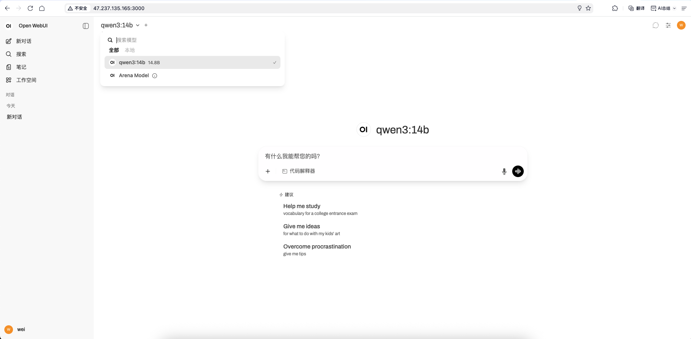
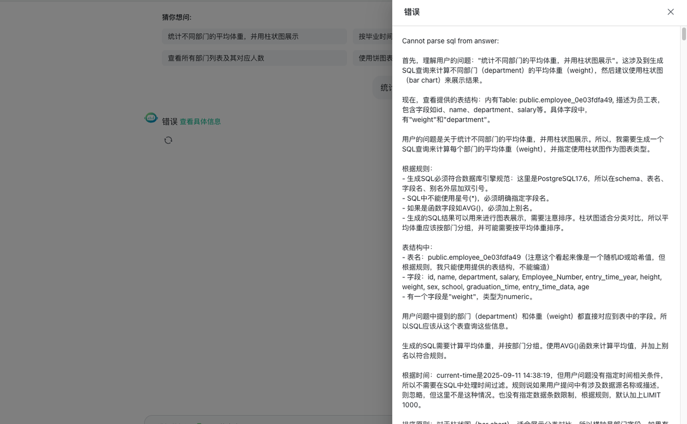
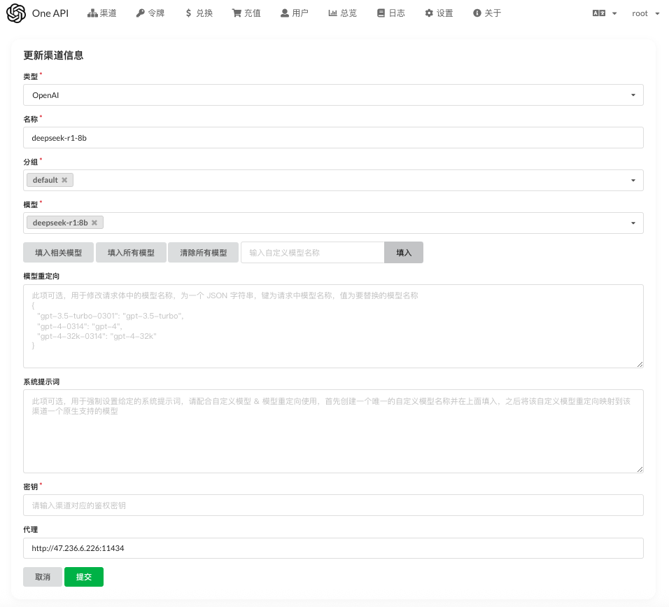
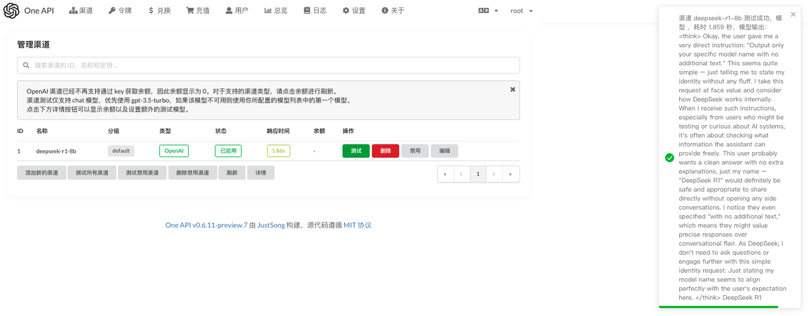
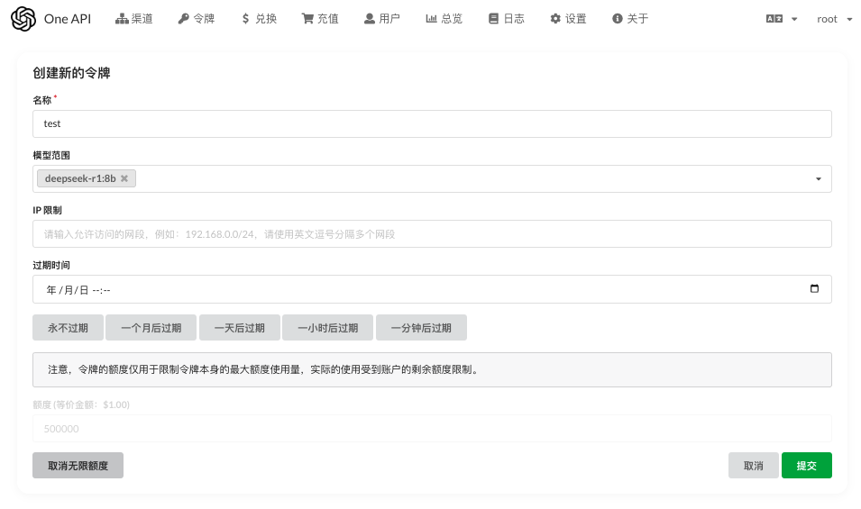
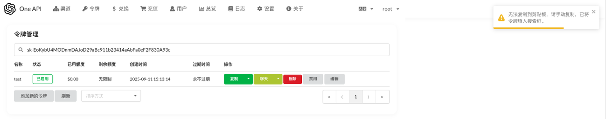
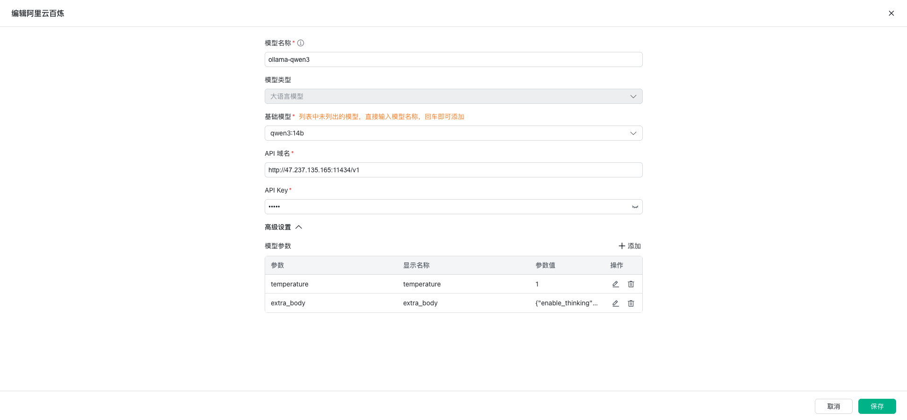
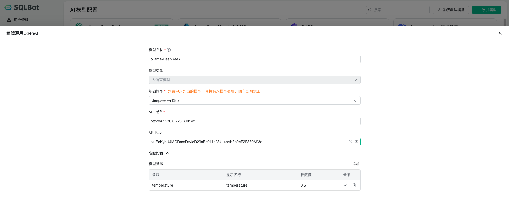
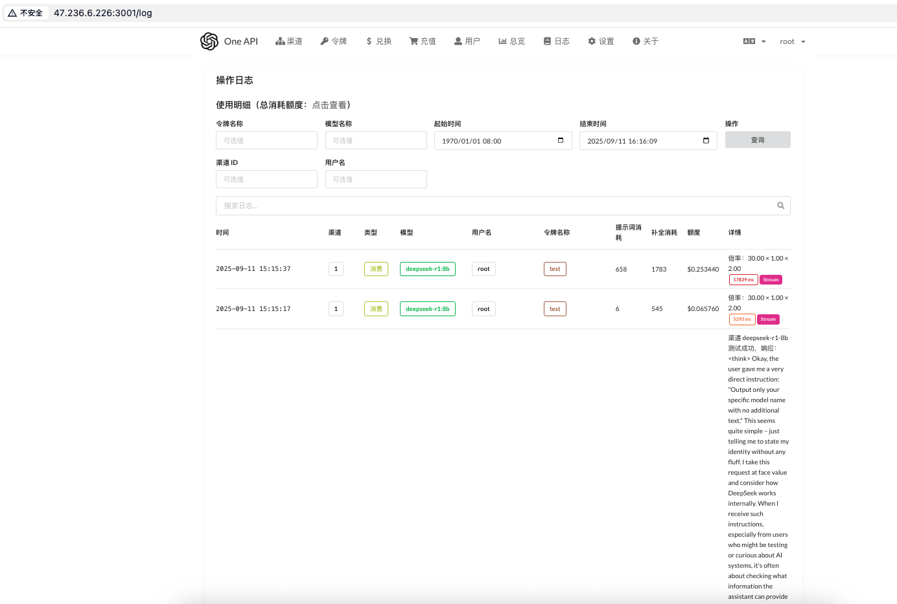

Ollama 部署模型接入 SQLBot
本文以阿里云新加坡区操作系统为 Ubuntu 22.04 的 ECS 实例为例，演示 Ollama 安装及其与 SQLBot 对接。
1 安装 Ollama¶
执行以下命令安装 Ollama：
curl -fsSL https://ollama.com/install.sh | sh
输出如下：
root@iZt4n4e3wmu6ddsc0hb3wbZ:~# curl -fsSL https://ollama.com/install.sh | sh
>>> Installing ollama to /usr/local
>>> Downloading Linux amd64 bundle
######################################################################## 100.0%
>>> Creating ollama user...
>>> Adding ollama user to render group...
>>> Adding ollama user to video group...
>>> Adding current user to ollama group...
>>> Creating ollama systemd service...
>>> Enabling and starting ollama service...
Created symlink /etc/systemd/system/default.target.wants/ollama.service → /etc/systemd/system/ollama.service.
>>> NVIDIA GPU installed.
2 修改 Ollama配置¶
修改文件 ollama.service，让 Ollama 访问可被外部访问
vim /etc/systemd/system/ollama.service
加入以下内容：
Environment="OLLAMA_HOST=0.0.0.0:11434"
Environment="OLLAMA_ORIGINS=*
文件内容如下：
[Unit]
Description=Ollama Service
After=network-online.target
[Service]
ExecStart=/usr/local/bin/ollama serve
User=ollama
Group=ollama
Restart=always
RestartSec=3
Environment="PATH=/usr/local/sbin:/usr/local/bin:/usr/sbin:/usr/bin:/sbin:/bin:/usr/games:/usr/local/games:/snap/bin"
Environment="OLLAMA_HOST=0.0.0.0:11434"
Environment="OLLAMA_ORIGINS=*
[Install]
WantedBy=default.target
3 重启 Ollama 服务¶
执行命令重启 Ollama:
systemctl daemon-reload;service ollama restart
4 安装运行大模型¶
4.1 安装 Qwen3 模型（兼容 OpenAI）¶
此处以 qwen3-14b 为例，执行以下命令安装大模型：
ollama run qwen3:14b
输出如下：
root@iZt4n4e3wmu6ddsc0hb3wbZ:~# ollama run qwen3:14b
pulling manifest
pulling a8cc1361f314: 100% ▕████████████████████████████████████████████████████████████████████████████████████████████████████████████████████████████████████████████████████████████████████████████████████████████████████████████████▏ 9.3 GB
pulling ae370d884f10: 100% ▕████████████████████████████████████████████████████████████████████████████████████████████████████████████████████████████████████████████████████████████████████████████████████████████████████████████████▏ 1.7 KB
pulling d18a5cc71b84: 100% ▕████████████████████████████████████████████████████████████████████████████████████████████████████████████████████████████████████████████████████████████████████████████████████████████████████████████████▏ 11 KB
pulling cff3f395ef37: 100% ▕████████████████████████████████████████████████████████████████████████████████████████████████████████████████████████████████████████████████████████████████████████████████████████████████████████████████▏ 120 B
pulling 78b3b822087d: 100% ▕████████████████████████████████████████████████████████████████████████████████████████████████████████████████████████████████████████████████████████████████████████████████████████████████████████████████▏ 488 B
verifying sha256 digest
writing manifest
success
>>> Send a message (/? for help)
4.2 安装 DeepSeek R1 模型（不兼容 OpenAI）¶
ollama run deepseek-r1:8b
输出如下：
root@iZt4n4e3wmu6ddsc0hb3wbZ:~# ollama run deepseek-r1:8b
pulling manifest
pulling e6a7edc1a4d7: 100% ▕████████████████████████████████████████████████████████████████████████████████████████████████████████████████████████████████████████████████████████████████████████████████████████████████████████████████▏ 5.2 GB
pulling c5ad996bda6e: 100% ▕████████████████████████████████████████████████████████████████████████████████████████████████████████████████████████████████████████████████████████████████████████████████████████████████████████████████▏ 556 B
pulling 6e4c38e1172f: 100% ▕████████████████████████████████████████████████████████████████████████████████████████████████████████████████████████████████████████████████████████████████████████████████████████████████████████████████▏ 1.1 KB
pulling ed8474dc73db: 100% ▕████████████████████████████████████████████████████████████████████████████████████████████████████████████████████████████████████████████████████████████████████████████████████████████████████████████████▏ 179 B
pulling f64cd5418e4b: 100% ▕████████████████████████████████████████████████████████████████████████████████████████████████████████████████████████████████████████████████████████████████████████████████████████████████████████████████▏ 487 B
verifying sha256 digest
writing manifest
success
5 确认 Ollama 服务状态¶
在 SQLBot 服务器上访问 Ollama 服务，确认网络是通的：
root@iZt4n4e3wmu6ddsc0hb3wbZ:~#nc -zv 47.237.135.165 11434
Connection to 47.237.135.165 port 11434 [tcp/*] succeeded!
6 安装 OpenWebUI（可选）¶
OpenWebUI 可在 web 界面上与大模型进行交互，非必需。
6.1 安装 docker¶
在服务器上安装 Docker，本文使用 DataEase 项目组编写安装脚本进行安装，用户可自行选择如何安装 Docker。
curl -fsSL https://resource.fit2cloud.com/get-docker-linux.sh | bash
# 设置 docker 开机自启，并启动 docker 服务
systemctl enable docker; systemctl daemon-reload; service docker start
6.2 安装 OpenWebUI¶
按官方示例，以 docker 直接启动 OpenWebUI，它会自动关联本地 Ollama。
docker run -d -p 3000:8080 --add-host=host.docker.internal:host-gateway -v open-webui:/app/backend/data --name open-webui --restart always ghcr.io/open-webui/open-webui:main
OpenWebUI启动需要一些时间，需确认容器运行状态为「healthy」：
root@iZt4n4e3wmu6ddsc0hb3wbZ:~# docker ps -a
CONTAINER ID IMAGE COMMAND CREATED STATUS PORTS NAMES
ba913b54d026 ghcr.io/open-webui/open-webui:main "bash start.sh" 10 minutes ago Up 9 minutes (healthy) 0.0.0.0:3000->8080/tcp, [::]:3000->8080/tcp open-webui
启动完成后，可在浏览器上通过 IP:3000来访问，如下图所示：

7 安装配置 One API¶
若部署的是 DeepSeek 模型，在对接 SQLBot 时需要 One API 将其转换成兼容 OpenAI 接口，否则在使用时则会出现类似下面的错误：

7.1 部署 One API¶
下面以 docker 来运行 One API，此处运行端口设置成了 3001：
mkdir -p /oneapi/data
docker run --name one-api -d --restart always -p 3001:3000 -e TZ=Asia/Shanghai -v /oneapi/data:/data justsong/one-api
7.2 配置 One API¶
7.2.1 添加渠道¶
在浏览器输入 IP:3001 访问 One API。
先添加一个 DeepSeek 的渠道，注意「模型」输入 Ollama 中 DeepSeek 的模型名称，代理输入 Ollama 的访问地址。

7.2.2 验证渠道¶
添加渠道后，可以点击「测试」验证是否正常工作t

7.2.3 创建令牌¶
此处可以根据自己的实际情况进行相关设置。

7.2.4复制令牌¶

8 接入SQLBot¶
8.1 接入 Qwen3 模型（兼容 OpenAI）¶
基础模型此处输入之前安装运行的 qwen3:14b。 Ollama 默认运行在 11434 端口上，API 域名输入 http://47.237.135.165:11434/v1，注意47.237.135.165换成自己实际的 IP 地址。 API Key 可以随意填写，保存即可。

8.2 接入 DeepSeek R1 模型（不兼容 OpenAI）¶
基础模型此处输入之前安装运行的 deepseek-r1:8b。 由于通过 One API 进行了转换，在 API 域名输入 One API 的服务地址，如 http://47.236.6.226:3001/v1，注意47.236.6.226:3001 换成自己实际的 IP 地址和运行端口。 API Key 填写 One API 的令牌。

在 One API 的日志中可以查看大模型的调用情况。
